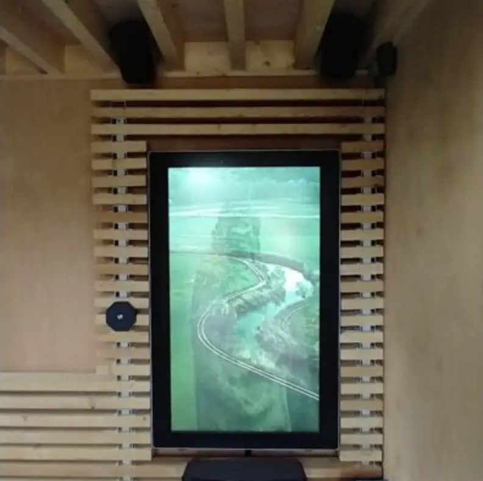

The place
Halfway along the long wall by the Sint-Pieterskerk, walkers and cyclists come across the Huis der Weemoed. You sit down for a moment, read, listen ... and are surprised by the real story behind this building. The former mortuary house has been respectfully given a new purpose as a quiet retreat and local information point, where everyone is welcome.
The installation
Here you can reflect on grief and farewell in a contemporary way. A mystical film and heavenly sounds help you find comfort in the memory of what once was.
Merodefestival created a narrative video with music and voices for it.
